Mon Hobbie: Le Sport
Bienvenue sur la page de mes hobbies,
Sur cette trouverez le lien pour acceder a ma page avec mes informations professionnel et personnels.
Mais aussi les liens pour acceder au différente informations sur mes Hobbies.
L'Escalade
L'escalade est un est sport qui se pratique en intèrieur et en extèrieur, il existe 3 différent type
d'escalade: Le Bloc, La Vitesse et La Difficulté.
-Le Bloc
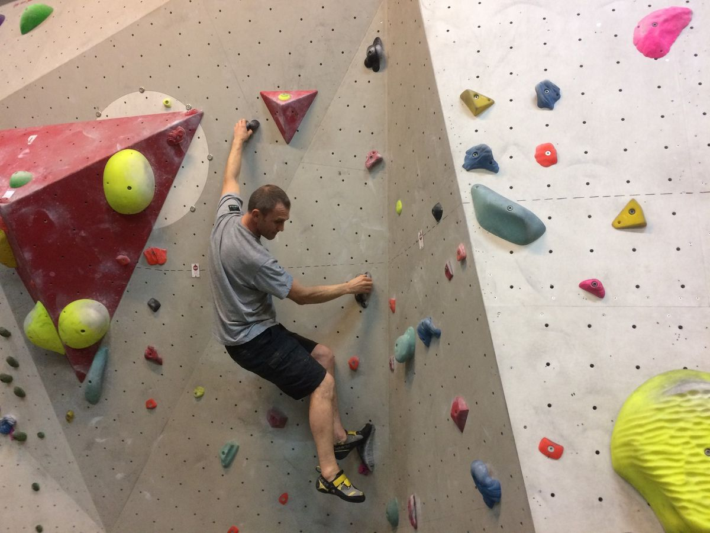
Le Bloc peut se pratiquer en intérieur comme en exterieur cela consite a monter sans assurage sur
une hauteur entre 2m et 4m voir 5m avec des tapis pour la réception. Le Bloc existe depuis les
années 2000, au début c'était pour s'entrainer pour l'alpinisme ou l'escalde encordé de nos jours
c'est une disicpline a part entière.
En Salle un Bloc c'est suivre un itinéraire définit par des prises de même couleur. En Extèrieur
c'est toujour suivre un tracer mais avec cette un livre qui nous indique les passage et les prises.
Grimper un Bloc c'est travaillez des mouvement qui nécéssitent puissance, force et dynamique sur une
courte période.
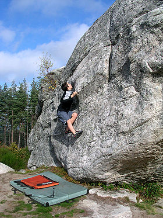
- La Vitesse
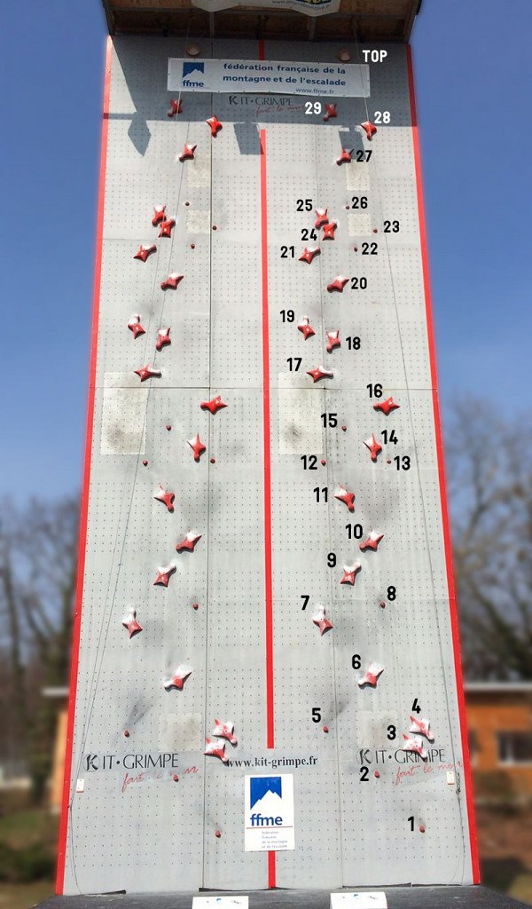
La Vitesse comme son nom le dit a pour but de monter le mur d'escalade le plus vite possible sur une
voie type
qui a été définit par l'IFSC (International Federation of Sport Climbing). La Vitesse ne peut se
pratiquer qu'en intérieur. En compétition officielles la vitesse se déroule sur deux voies
similaires parallèles. Les épreuves se déroulent donc en duel et le départ est donné par un signal
sonore . Un systhème de paillaison élécctronique déclenche le chronomètre. Le chronomètre s'arrete
une fois que le grimpeur a touché le bouton "champigon" tout en haut du mur. Pour éviter les
accidents, les grimpeurs sont assurés en moulinette par une machine, donc depuis le haut du mur.
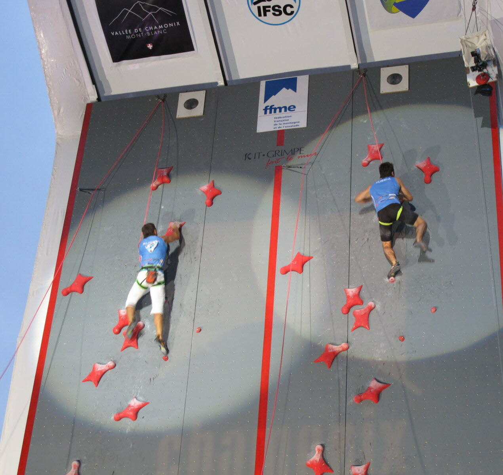
- La Difficulté
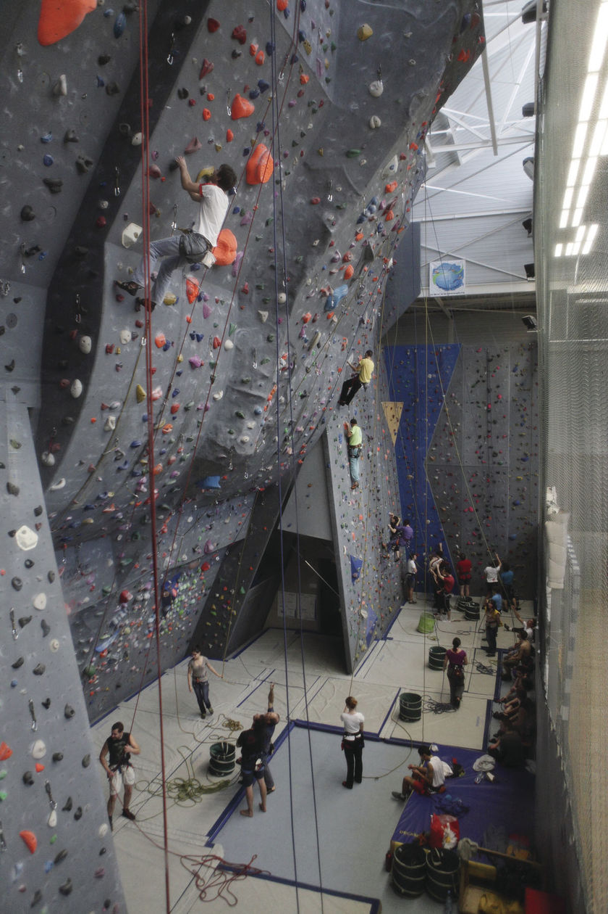
La Difficulté peut se pratiquer en intérieur comme en extèrieur. Cela consite a monter sur une
paroie en étant assurer avec une corde. Il existe deux types de grimpe: La grimpe en-tête et la
grimpe en moulinette. La Grimpe en-tête consite a monter la corde sur le mur ou la parois c'est
obligatoire en compétition de grimper en-tête. Alors que la grimpe en moulinette, la corde est déja
en haut et on tirée vers le haut. la grimpe en-tete se fait beaucoup en extèrieur vu qu'il n'y a pas
de corde préinstallé. La grimpe en moulinette est très bien pour débuter car cela permet de
s'entrainer et de s'améliorer physiqument. La grimpe en-tête est beaucoup plus dur mais aussi plus
dangeureuse. Pour faire de la difficulté il faut etre assuré par une personne cela nécéssite d'avoir
une grande confiance en la personne car elle est responsable de votre vie.
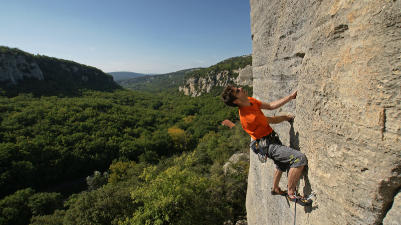
- Pourquoi j'aime grimper?
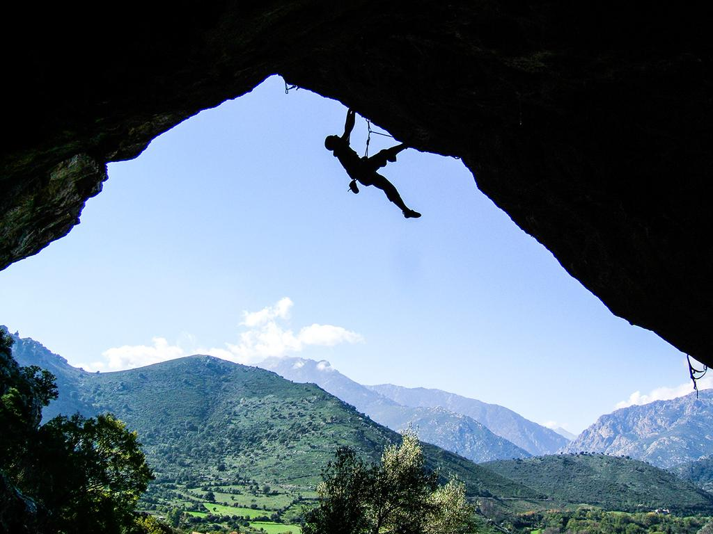
L'escalade est mon sport principale: je grimpe depuis que j'ai l'age de 10ans j'ai toujours adoré
l'escalde car c'est un sport ou on a une forte adrénaline, on doit toujours se fixer des objectifs
de plus en plus dur et ou on doit se surpasser physiquement et surtout mentalement. L'escalade c'est
aussi en extèrieur
découvrir des endroits magnifique mais c'est
aussi le fait qu'on est en perpétuelle apprentissage chaque voie chaque bloc est différent. La
communauté des grimpeurs est vraiment une communauté ouverte et toujours pret à aider pour
progresse.
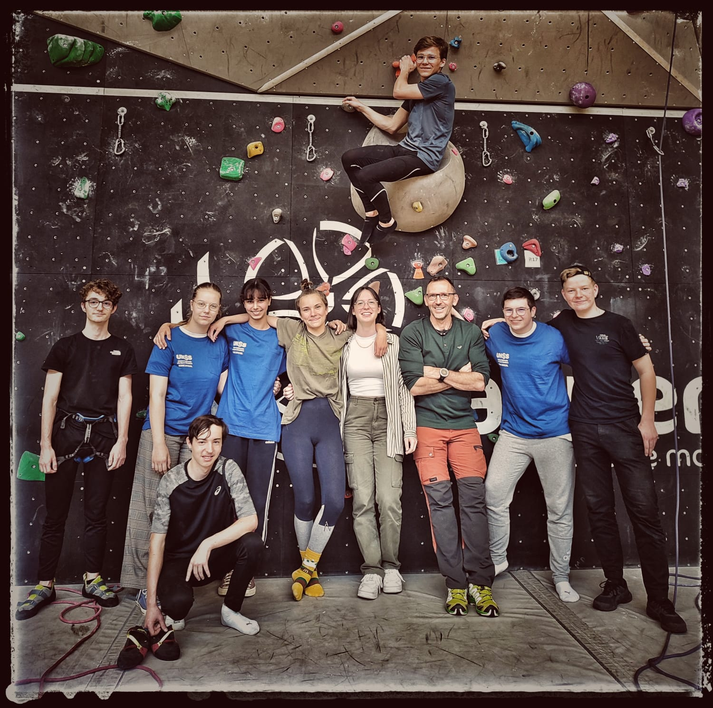
La Randonné
La Randonné à la journé:
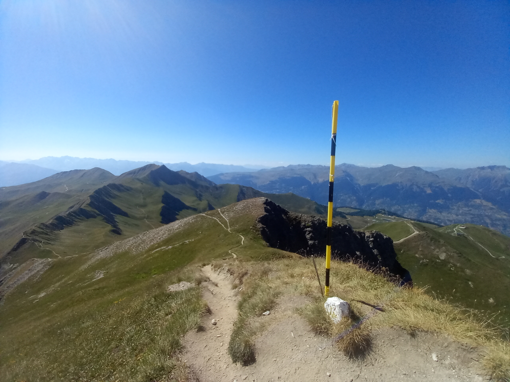
La Randonné à la journé consiste a partir marcher à la journée sa peut-être une balade en famille,
une cueillete de champignons ou encore une découverte de paysage. Ces marches sont souvent effectuer
en moyenne montagne et durent moins d'une journée. Il n'y a pas besoin d'équipement particulier pour
la randonnée à la journée a part avoir de l'eau et des chaussures prévent pour une activité sportive
extèrieur.
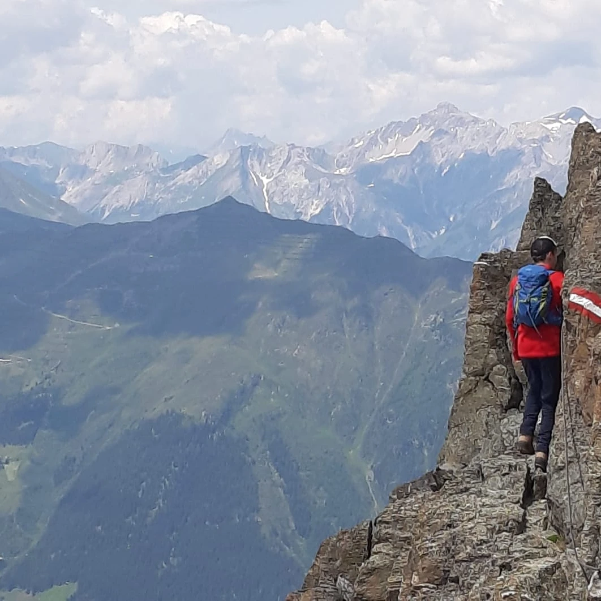
La Randonné en itinérance:
 La Randonné en itinérence consiste a partir marché plusieurs jours, semaine, mois voir années
d'affiler et de changer d'hébergements chaque soir. C'est partir d'un point A et d'aller à un point
B chaque jour. Pour la ranndoné en itinérence il existe des Grandes Randonnés(GR)(GR20: GR Corse),
des tours prédéfinies
(Tour du Mont Blanc,....) ou encore des chemins (Saint Jacques de Compostelle,...). Mais on peut
aussi faire un parcours qu'on a crée soit même.
La Randonné en itinérence consiste a partir marché plusieurs jours, semaine, mois voir années
d'affiler et de changer d'hébergements chaque soir. C'est partir d'un point A et d'aller à un point
B chaque jour. Pour la ranndoné en itinérence il existe des Grandes Randonnés(GR)(GR20: GR Corse),
des tours prédéfinies
(Tour du Mont Blanc,....) ou encore des chemins (Saint Jacques de Compostelle,...). Mais on peut
aussi faire un parcours qu'on a crée soit même.
 Pourquoi j'aime faire de la Randonnés:
Pourquoi j'aime faire de la Randonnés:
.jpg) Je randonne depuis que je suis petit se qui fait qu'aujourdhui j'ai fait un grand nombre de randonné
comme le Tour du Mont-Blanc, La Berlinerhohenweg, l'Adlerweg.... J'ai toujours aimé marcher, comme l'escalade et la course
à pied, j'aime prendre l'air, respirer l'air de montagne, admirer des paysages magnifiques mais aussi se fixer des
objectifs de réussir la randonné. Pour les randonnés en itinérance la convivialité et l'acceuil dans les refuges est
vraiment sympatique.
Je randonne depuis que je suis petit se qui fait qu'aujourdhui j'ai fait un grand nombre de randonné
comme le Tour du Mont-Blanc, La Berlinerhohenweg, l'Adlerweg.... J'ai toujours aimé marcher, comme l'escalade et la course
à pied, j'aime prendre l'air, respirer l'air de montagne, admirer des paysages magnifiques mais aussi se fixer des
objectifs de réussir la randonné. Pour les randonnés en itinérance la convivialité et l'acceuil dans les refuges est
vraiment sympatique.
 La Course à Pied
La course à pied, c’est une multitude de disciplines aussi variées les unes que les autres: le sprint,
le demi-fond, le fond ou le marathon ou encore le Trail.
Le Sprint:
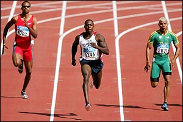
Course sur une courte distance. on distingue deux types de sprint : le sprint court
sur 100
et le sprint long comme les 200 ou 400m.
Le Demi-Fond:
Course d'une distance comprise entre 800 et 3 000 mètres. Plus longues que les
sprints et plus courtes que les courses de fond. Il existe trois type de course de Demi-Fond: le
800 mètres, le 1 500 mètres et le 3000 mètres steeple.
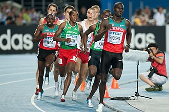
La Course de Fond:
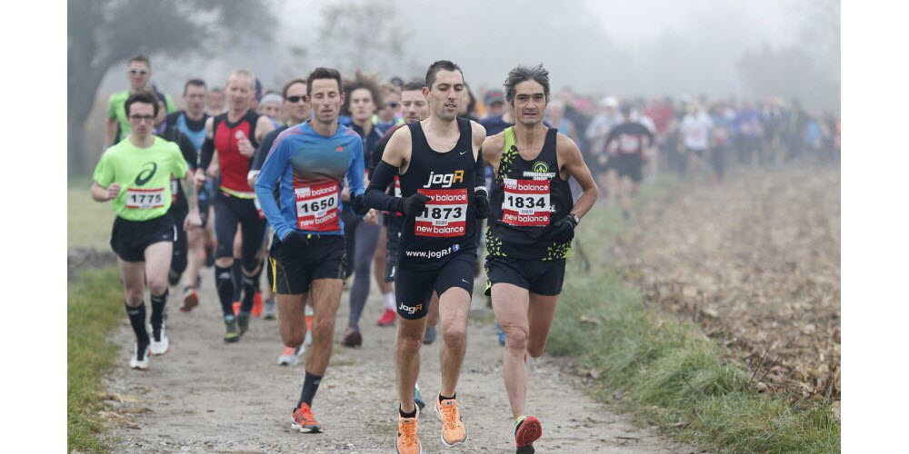
Qu'on appelle aussi course longue distance ou encore course d'endurance. Il
existe trois principaux type: le 5Km, le 10 km et le semi-marathon 21km.
Le Marathon:
Le Marathon a été crée lors des jeux des Jeux olympiques d'Athènes pour commémorer
la légende du messager grec Philippidès, qui aurait parcouru la distance de la ville Marathon à
Athènes pour annoncer la victoire contre les Perses en 490 av. J.-C. C'est pour sa que le
Marathon est une course sur 42km. Il exise de prestigieux marathon par exemple le marathon de
Boston ou celui de Berlin etc.
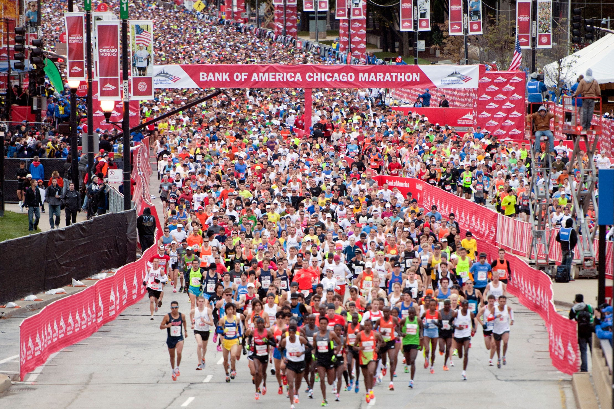
Le Trail:
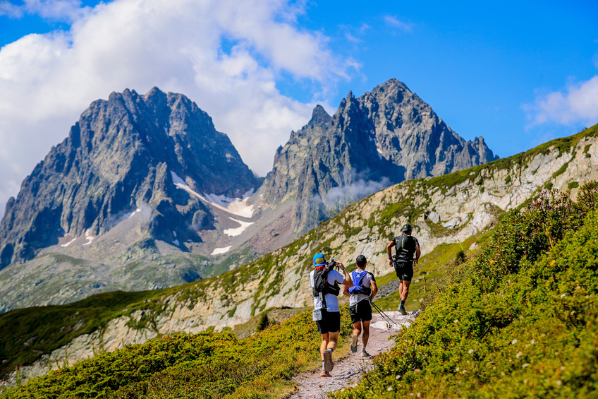
C'est une course qui se pratique sur des chemins ou sur des sentiers. Il existe
plusieurs type de Trail: le cross-country qui se pratique sur une distance de 3 à 12km. A
l'inverse les compétitions de trail libre peuvent faire la distance souhaiter par
l'organisateur, la distance dépasse très souvent les 10km et pour finir toujour dans cette
catégorie il y a les ultra-trails faisant souvent plus de 100km et pouvent atteindre plusieurs
centaine de kilomèttre. Il y a des exemples très connue comme l'UTMB(ultra-trail du Mont-Blanc)
ou encore le Tor des Géants.
Le Type de course que je pratique:
Je pratique principalement trois types de course le demi-fond et
surtout le fond et le trail je cours sur des distances qui varie entre 5 et 10km. J'aime courir car
on doit toujour se fixer des objectifs mais aussi sa permet de dévelloper le cardiaque, de faire le
vide dans sa tete, se déntendre et prendre l'air.
La Course à Pied
La course à pied, c’est une multitude de disciplines aussi variées les unes que les autres: le sprint,
le demi-fond, le fond ou le marathon ou encore le Trail.
Le Sprint:
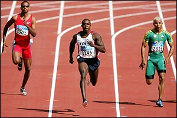
Course sur une courte distance. on distingue deux types de sprint : le sprint court
sur 100
et le sprint long comme les 200 ou 400m.
Le Demi-Fond:
Course d'une distance comprise entre 800 et 3 000 mètres. Plus longues que les
sprints et plus courtes que les courses de fond. Il existe trois type de course de Demi-Fond: le
800 mètres, le 1 500 mètres et le 3000 mètres steeple.
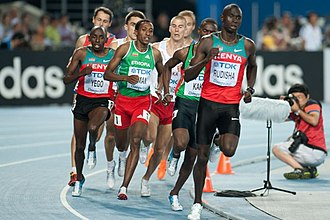
La Course de Fond:
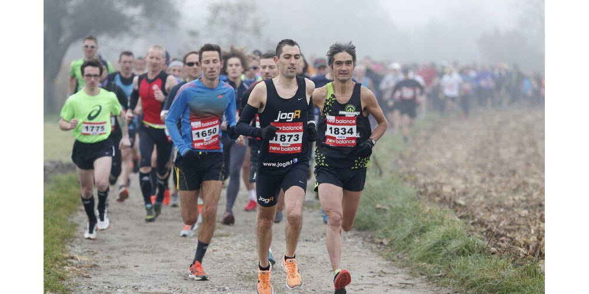
Qu'on appelle aussi course longue distance ou encore course d'endurance. Il
existe trois principaux type: le 5Km, le 10 km et le semi-marathon 21km.
Le Marathon:
Le Marathon a été crée lors des jeux des Jeux olympiques d'Athènes pour commémorer
la légende du messager grec Philippidès, qui aurait parcouru la distance de la ville Marathon à
Athènes pour annoncer la victoire contre les Perses en 490 av. J.-C. C'est pour sa que le
Marathon est une course sur 42km. Il exise de prestigieux marathon par exemple le marathon de
Boston ou celui de Berlin etc.
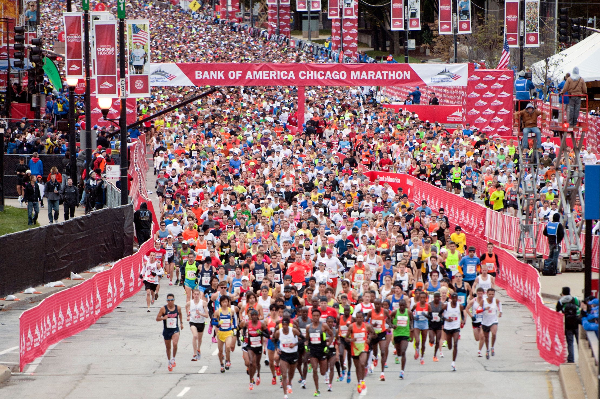
Le Trail:
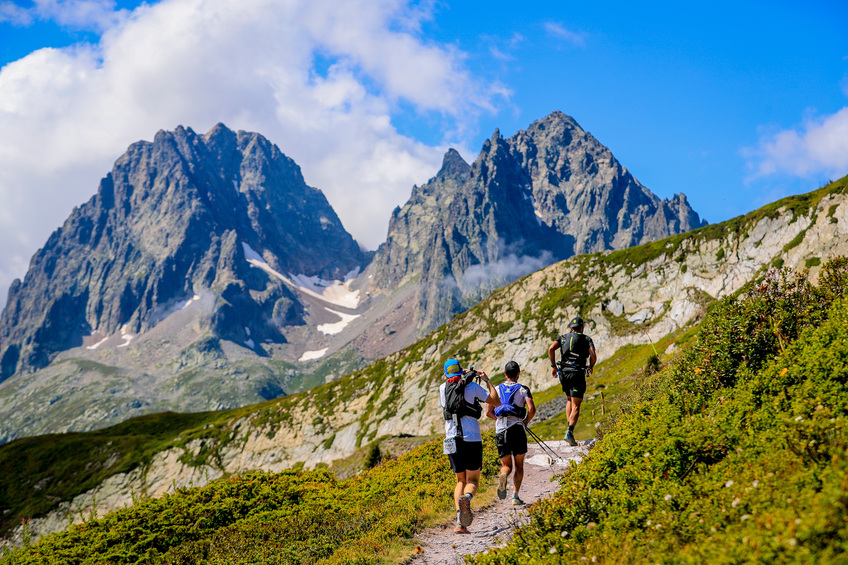
C'est une course qui se pratique sur des chemins ou sur des sentiers. Il existe
plusieurs type de Trail: le cross-country qui se pratique sur une distance de 3 à 12km. A
l'inverse les compétitions de trail libre peuvent faire la distance souhaiter par
l'organisateur, la distance dépasse très souvent les 10km et pour finir toujour dans cette
catégorie il y a les ultra-trails faisant souvent plus de 100km et pouvent atteindre plusieurs
centaine de kilomèttre. Il y a des exemples très connue comme l'UTMB(ultra-trail du Mont-Blanc)
ou encore le Tor des Géants.
Le Type de course que je pratique:
Je pratique principalement trois types de course le demi-fond et
surtout le fond et le trail je cours sur des distances qui varie entre 5 et 10km. J'aime courir car
on doit toujour se fixer des objectifs mais aussi sa permet de dévelloper le cardiaque, de faire le
vide dans sa tete, se déntendre et prendre l'air.